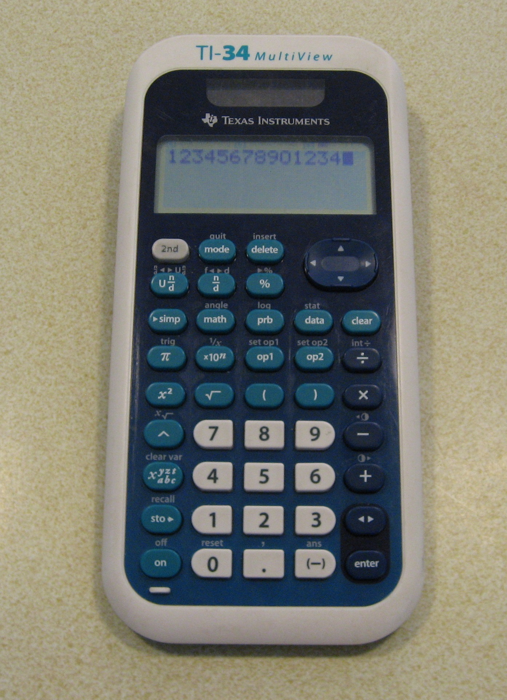
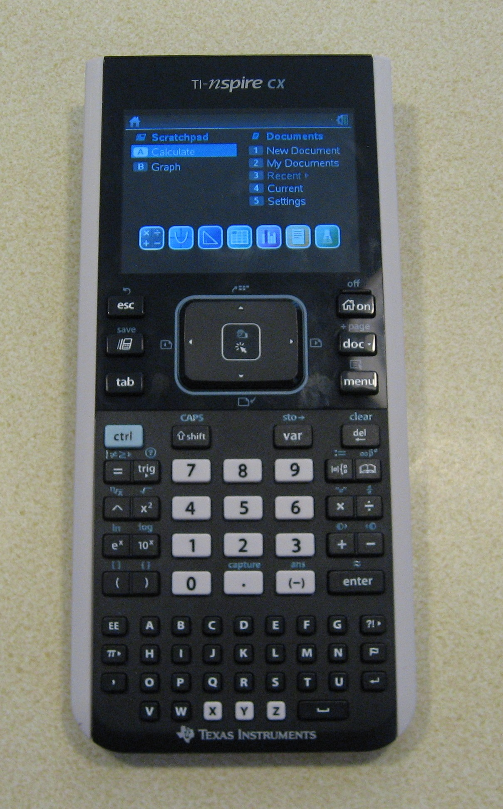

Here are some old and new calculators I have. Two of them are owned by my kids, the rest are mine. The calculators are shown in the order I acquired them.
This TI-30 III was my first calculator. All students taking the sciences track in my high school had to buy this model as a sophomore. As I recall, the school puchased them in bulk and handed them out one day in class. We had to pay a modest amount, I think about $20. This was 1984. The original batteries (LR44 x 2) lasted until about 2008 when I replaced them because the screen was getting dim.
This HP-15C was a high school graduation present in 1986, and this was my favorite calculator all throughout college. I got used to the PRN entry and I liked the engineering notation; this is like scientific notation except the power of 10 is always a multiple of 3, 10^3, 10^6, 10^-3, etc.
I bought this TI-34 while I was in college because it had boolean logic and hexadecimal conversion. This was 1988. I remember the day I bought it there was an ice storm, and my car slid off the road but I got traction once I got 2 wheels in the grass and corrected and kept going. I was fearless or foolish in those days.
I bought this HP-10B, a business calculator, because it had the ability to calculate amortization math for loans. I don't remember the exact year, but I know I was out of school and working for a few years before I bought it. It might have been around 1994.
This HP-20S is the scientific version of the 10B. I liked the 10B so much that I decided to buy his brother, the 20S just a few weeks later.
This TI BA II Plus was given to me by my father-in-law. I don't remember the exact year. I'll guess 2005.
This Sharp EL-1611 also came from my father-in-law at the same time as the BA II Plus. This is my only printing calculator. When I first got it, the printing was good. By now the ribbon has continued to dry out and the printing is getting faint, but it still works.
This TI-30X IIS (can TI find enough suffixes?) was a gift from Harris Corp. Supposedly, a distant relative to my 1984 TI-30III, but it is hard to see much resemblance in looks or functionality.
This TI-34 MultiView is the calculator my son needed for 6th grade in 2014. This doesn't bear any resemblance to my 1988 T-34 and it does not have the wonderful and unique computer math of the old TI-34.

This TI-nspire CX is the calculator my son needed in 8th grade for the 2016 school year. It starts to blur the line between a calculator and computer. It has a touchpad with onscreen mouse cursor, it has document storage, a graphical user interface, and an alpha-numeric keyboard.

This TI-34 II is a third varient of the TI-34 family. This was a recent donation to the museum by a friend. It looks similar in construction and capabilities to the TI-30X IIS.
Page last updated April 17, 2020